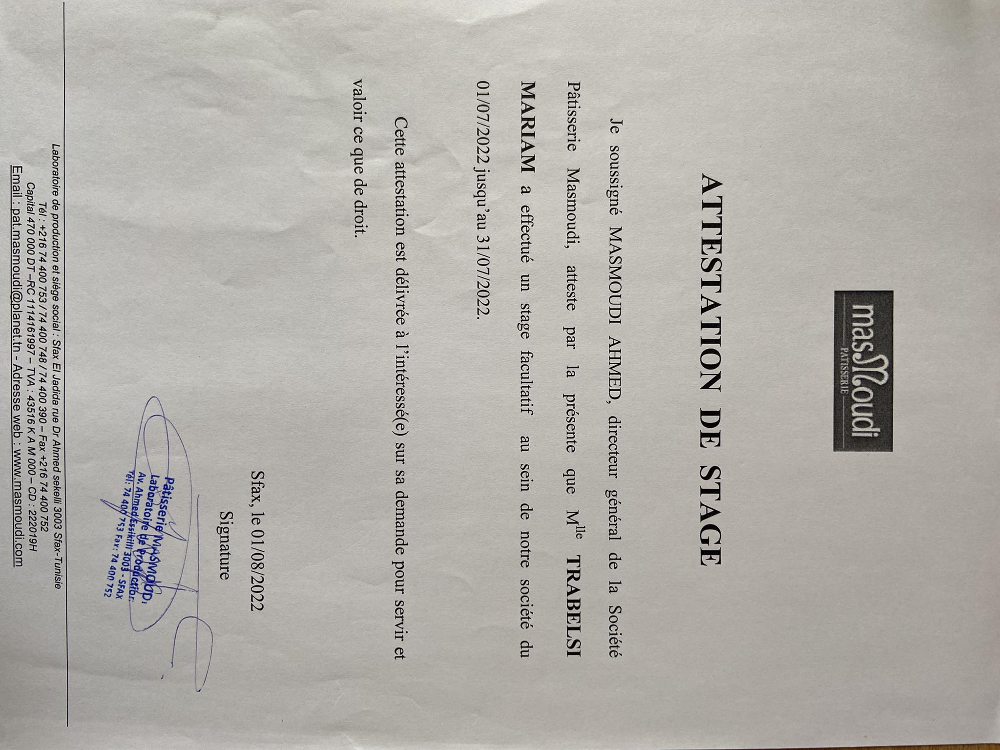
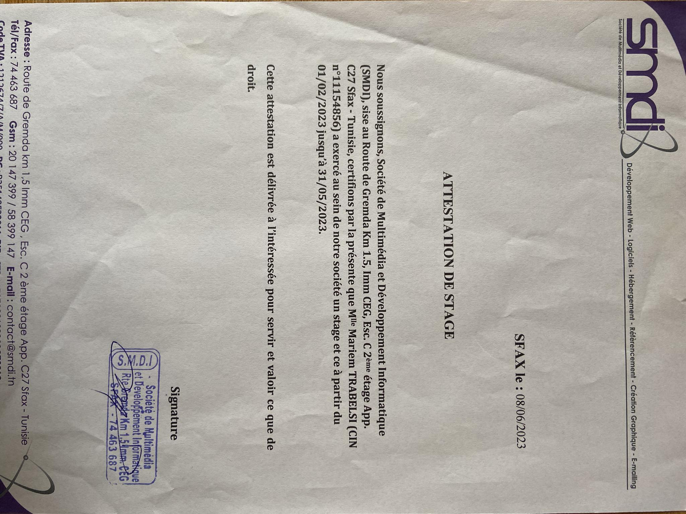

Pendant mon stage d'été d'une durée d'un mois en 2021-2022, j'ai eu l'opportunité enrichissante de travailler dans le domaine du développement web au sein de l'entreprise Pâtisserie Masmoudi Commerciale, sous la supervision bienveillante de Madame Masmoudi. Cette expérience a été un véritable tremplin pour moi, puisque j'étais alors en deuxième année de ma licence. Mon rôle consistait principalement à contribuer au renforcement de la présence en ligne de l'entreprise, en mettant en œuvre des compétences acquises au cours de ma formation universitaire. J'ai pu travailler sur divers aspects du développement web, tels que la conception et l'optimisation de sites internet, ainsi que sur des projets de programmation visant à améliorer l'expérience utilisateur. Grâce à cette immersion professionnelle, j'ai non seulement développé mes compétences techniques, mais j'ai également appris à collaborer efficacement au sein d'une équipe professionnelle et à m'adapter aux exigences spécifiques du secteur de la pâtisserie commerciale. Ce stage a été une expérience formatrice qui a consolidé ma passion pour le développement web et a renforcé ma compréhension des applications pratiques de mes études universitaires.
Au cours de mon stage de Projet de Fin d'Études (PFE) chez SMDI Développement, qui a eu lieu sur une période de quatre mois entre 2022 et 2023, j'ai eu l'opportunité captivante de concevoir et mettre en œuvre une caisse enregistreuse tactile. Ce projet ambitieux m'a permis d'appliquer mes connaissances en développement logiciel dans un contexte professionnel. J'ai particulièrement travaillé avec le framework Laravel, basé sur PHP, pour la réalisation de cette caisse enregistreuse. Cette expérience m'a non seulement familiarisé avec les technologies modernes du développement web, mais elle m'a également offert une compréhension approfondie des aspects pratiques du travail en équipe et de la gestion de projet. Collaborer avec l'équipe talentueuse de SMDI Développement m'a permis d'élargir mes compétences techniques tout en contribuant de manière significative au succès du projet. Ce stage a été une étape cruciale dans mon apprentissage, marquant le passage de la théorie académique à la réalité professionnelle, et renforçant ma passion pour le développement logiciel.
